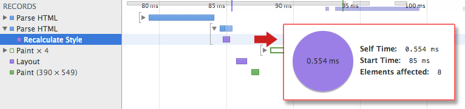

构建对象模型
浏览器渲染页面前需要先构建 DOM 和 CSSOM 树。因此，我们需要确保尽快将 HTML 和 CSS 都提供给浏览器。
TL;DR
- 字节 → 字符 → 令牌 → 节点 → 对象模型。
- HTML 标记转换成文档对象模型 (DOM)；CSS 标记转换成 CSS 对象模型 (CSSOM)。
- DOM 和 CSSOM 是独立的数据结构。
- Chrome DevTools Timeline 让我们可以捕获和检查 DOM 和 CSSOM 的构建和处理开销。
文档对象模型 (DOM)
1 | <html> |
让我们从可能的最简单情况入手：一个包含一些文本和一幅图片的普通 HTML 页面。浏览器如何处理此页面？

1、转换： 浏览器从磁盘或网络读取 HTML 的原始字节，并根据文件的指定编码（例如 UTF-8）将它们转换成各个字符。
2、令牌化： 浏览器将字符串转换成 W3C HTML5 标准规定的各种令牌，例如，“”、“
”，以及其他尖括号内的字符串。每个令牌都具有特殊含义和一组规则。3、词法分析： 发出的令牌转换成定义其属性和规则的“对象”。
4、DOM 构建： 最后，由于 HTML 标记定义不同标记之间的关系（一些标记包含在其他标记内），创建的对象链接在一个树数据结构内，此结构也会捕获原始标记中定义的父项-子项关系：HTML 对象是 body 对象的父项，body 是 paragraph 对象的父项，依此类推。

整个流程的最终输出是我们这个简单页面的文档对象模型 (DOM)，浏览器对页面进行的所有进一步处理都会用到它。
浏览器每次处理 HTML 标记时，都会完成以上所有步骤：将字节转换成字符，确定令牌，将令牌转换成节点，然后构建 DOM
树。这整个流程可能需要一些时间才能完成，有大量 HTML 需要处理时更是如此。

如果您打开 Chrome DevTools 并在页面加载时记录时间线，就可以看到执行该步骤实际花费的时间。在上例中，将一堆 HTML 字节转换成 DOM 树大约需要 5 毫秒。对于较大的页面，这一过程需要的时间可能会显著增加。创建流畅动画时，如果浏览器需要处理大量 HTML，这很容易成为瓶颈。
DOM 树捕获文档标记的属性和关系，但并未告诉我们元素在渲染后呈现的外观。那是 CSSOM 的责任。
CSS 对象模型 (CSSOM)
在浏览器构建我们这个简单页面的 DOM 时，在文档的 head 部分遇到了一个 link 标记，该标记引用一个外部 CSS 样式表：style.css。由于预见到需要利用该资源来渲染页面，它会立即发出对该资源的请求，并返回以下内容：
1 | body { font-size: 16px } |
我们本可以直接在 HTML 标记内声明样式（内联），但让 CSS 独立于 HTML 有利于我们将内容和设计作为独立关注点进行处理：设计人员负责处理 CSS，开发者侧重于 HTML，等等。
与处理 HTML 时一样，我们需要将收到的 CSS 规则转换成某种浏览器能够理解和处理的东西。因此，我们会重复 HTML 过程，不过是为 CSS 而不是 HTML：

CSS 字节转换成字符，接着转换成令牌和节点，最后链接到一个称为“CSS 对象模型”(CSSOM) 的树结构内：

CSSOM 为何具有树结构？为页面上的任何对象计算最后一组样式时，浏览器都会先从适用于该节点的最通用规则开始（例如，如果该节点是 body 元素的子项，则应用所有 body 样式），然后通过应用更具体的规则（即规则“向下级联”）以递归方式优化计算的样式。
以上面的 CSSOM 树为例进行更具体的阐述。span 标记内包含的任何置于 body 元素内的文本都将具有 16 像素字号，并且颜色为红色 — font-size 指令从 body 向下级联至 span。不过，如果某个 span 标记是某个段落 (p) 标记的子项，则其内容将不会显示。
还请注意，以上树并非完整的 CSSOM 树，它只显示了我们决定在样式表中替换的样式。每个浏览器都提供一组默认样式（也称为“User Agent 样式”），即我们不提供任何自定义样式时所看到的样式，我们的样式只是替换这些默认样式（例如默认 IE 样式）。
要了解 CSS 处理所需的时间，您可以在 DevTools 中记录时间线并寻找“Recalculate Style”事件：与 DOM 解析不同，该时间线不显示单独的“Parse CSS”条目，而是在这一个事件下一同捕获解析和 CSSOM 树构建，以及计算的样式的递归计算。

我们的小样式表需要大约 0.6 毫秒的处理时间，影响页面上的 8 个元素 — 虽然不多，但同样会产生开销。不过，这 8 个元素从何而来呢？CSSOM 和 DOM 是独立的数据结构！结果证明，浏览器隐藏了一个重要步骤。后面将 DOM 与 CSSOM 关联在一起的渲染树。